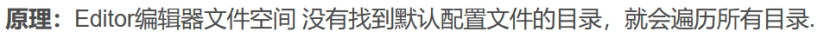
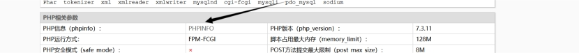
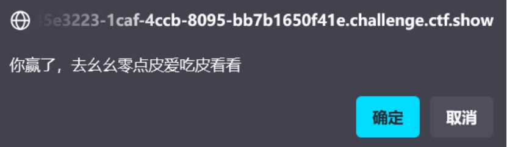

Web12
提示:有时候网站上的公开信息，就是管理员常用密码
主要考察收集信息和大胆猜测的能力
Robots.txt
/admin/
User:admin
Passwd:372619038(在页面的最下面)
ctfshow{5fae3c78-7d0c-4749-ba24-fa0a6bbe9cdd}
Web13
提示;技术文档里面不要出现敏感信息，部署到生产环境后及时修改默认密码
页面下面的document点进去出现账号密码和url
ctfshow{eb6944f6-439f-40a9-bdb2-1b15750377d8}
Web14
提示:有时候源码里面就能不经意间泄露重要(editor)的信息,默认配置害死人
我们看源码，搜索editor发现是一个图片，再通过wp进入了editor
联想到：页面的设计编辑当中出现的图片是通过一个画图工具显示的，那么这个画图工具一定可以查看当前所有目录。
那么，我们就把flag所在的目录搞到url就可以
Wp说的原理

Web15
提示：公开的信息比如邮箱，可能造成信息泄露，产生严重后果
这道题我们可以通过utl/admin进入后台，然后账号应该是admin，密码不知道，但是重置密码里面可以重置，但是要重置密码需要作者所居住的城市，我们可以通过页面下面作者的qq邮箱搜索他的qq（25.1.16截至今天已经搜不到了），不过不妨碍做题，是西安，密码重置了之后登录进去
ctfshow{d95e4ba6-fa90-40ee-9835-f68407fb8f9b}
Web16
提示：对于测试用的探针，使用完毕后要及时删除，可能会造成信息泄露
PHP探针：php探针是用来探测空间、服务器运行状况和PHP信息用的，探针可以实时查看服务器硬盘资源、内存占用、网卡 流量、系统负载、服务器时间等信息。输入URL/tz.php 即可打开雅黑PHP探针

点进phpinfo，查看php信息，然后搜索ctf
ctfshow{1b1ba394-e6ac-40fa-a0a2-aec94f57f917}
Web17
提示：备份的sql文件会泄露敏感信息
Url/backup.sql
ctfshow{dfca4269-062e-4c5f-9140-3de1758c32a5}
Web18
游戏题，太好了，我是傻逼，就喜欢这种题
查看js文件，找目标
if(score>100)
{
var result=window.confirm(“\u4f60\u8d62\u4e86\uff0c\u53bb\u5e7a\u5e7a\u96f6\u70b9\u76ae\u7231\u5403\u76ae\u770b\u770b”);
}
复制里边的东西，然后运行

去看看url/110.php
ctfshow{0869ea96-75f4-4b14-87cd-48e8f6d4cce1}
Web19
提示：密钥什么的，就不要放在前端了

用hackebar
方法一：Username=admin&pazzword=a599ac85a73384ee3219fa684296eaa62667238d608efa81837030bd1ce1bf04
在原来的登录界面不行，因为没有解密啥的（后来知道他是在登录界面又加密了一下，所以要解密一下源码里面的），但是为啥在hackbar的post就可以
方法二：
解码然后在登录界面提交
这是什么解码？复制给ai问ai
解出来是
i_want_a_36d_girl
出题人脑子也纯有冰
ctfshow{c155ec3f-a3e9-44dc-84d6-03cd726e5751}
Web20
提示：mdb文件是早期asp+access构架的数据库文件，文件泄露相当于数据库被脱裤了。
url/db/db.mdb下载文件
flag{ctfshow_old_database}
12-20总结
1.后台登录界面url/robots.txt
2.尾页documen里面会有账号密码之类的
3.网页图片editor浏览所有文件
4.Php探针，url/tz.php然后就是进去phpinfo
5.sql文件泄露url/backup.sql
6.游戏找js文件
7.密钥类的用hackbar或者自行ai解码